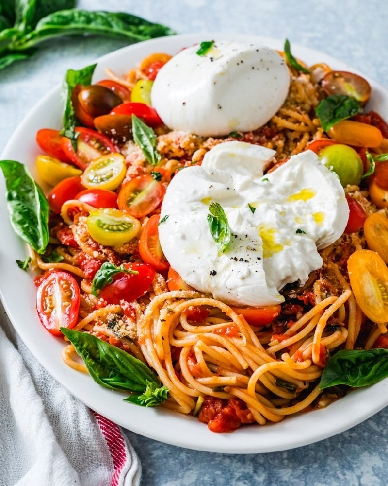

Burrata-Pasta

Description
One of my favorite dishes. I just prepared it. It's super easy to prepare. And the burrata just makes it so creamy! Yummy! Online you'll find some recipes also containing milk, cream or any other dairy product. But if you use good-quality burrata you won't need any more cream - prepare for some cheese-based creamyness…
Ingredients
Pasta
- 200 grams pasta (your choice); I recommend using some thicker pasta
- Water as declared in the preparation for the pasta
- Salt - use an amount of salt so you won't need salt in the sauce
Sauce
- 1 red onion; cubed
- 1 clove of garlic; thinly sliced
- Olive oil
- 1 pepper; moderately cubed
- 4 mushrooms (champignons); quartered
- 500 grams of dashed tomato (one can)
- Grinded black pepper
- Last but not leasted: 1 ball of burrata
Steps
- Prepare the pasta as declared on the pasta's package
- Put the olive oil to moderate heat in a large pan
- Throw in the onion and the garlic and stir until it's golden
- Add the pepper and mushrooms
- Let it simmer for about 5 minutes
- Stir in the dashed tomatoes
- Finish it with some grinded black pepper
- Arrange pasta and sauce on a plate. Per person add one ball of burrata and cut it in four pieces
- Stir in the inner of the burrata
- Enjoy!
Home